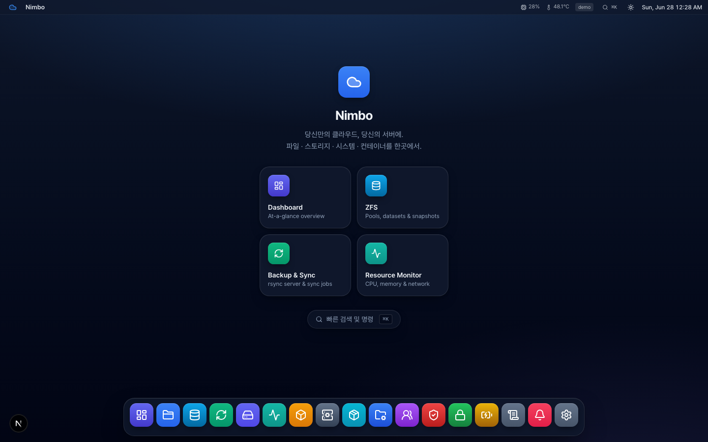
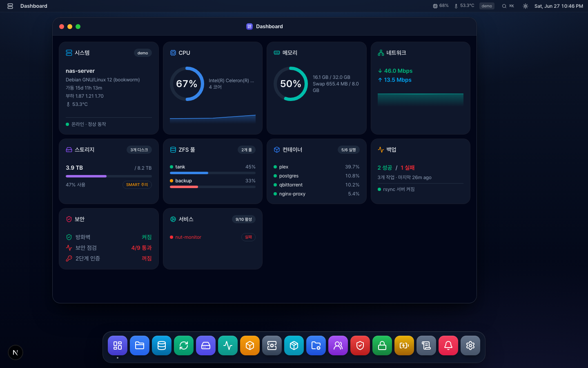
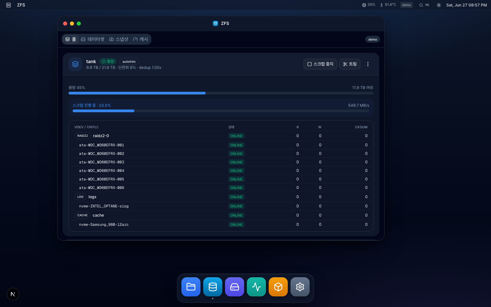
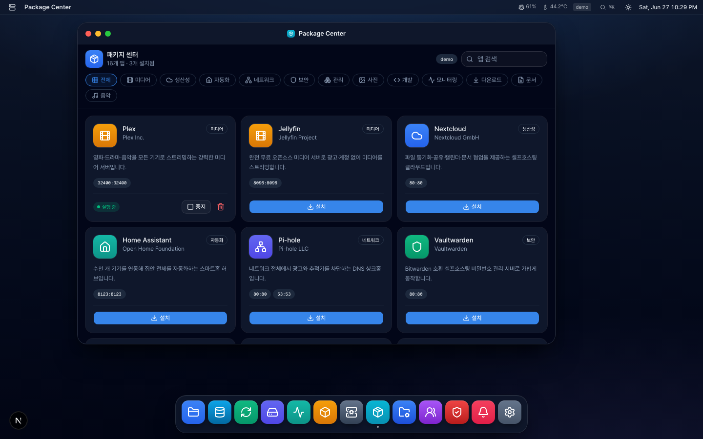
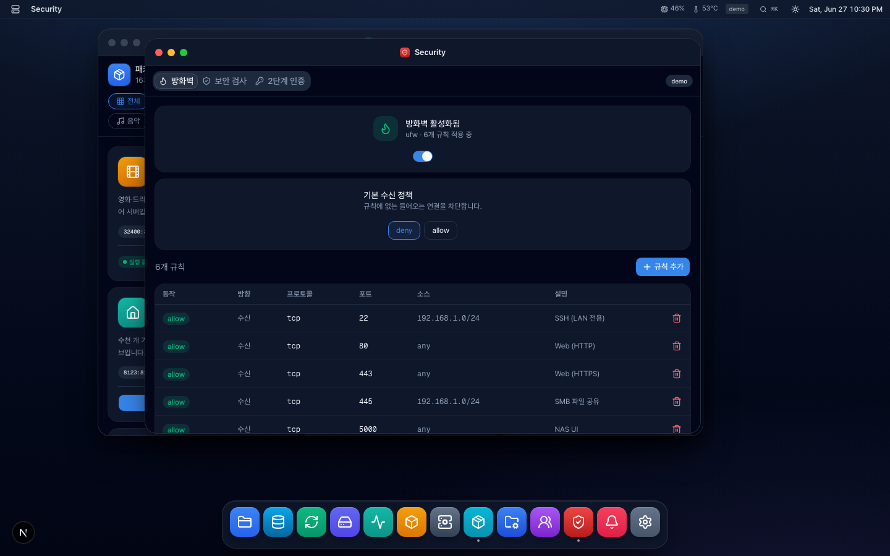

Linux 서버를 NAS처럼 관리하세요. 파일 · ZFS 스토리지 · 백업 · 컨테이너, 그리고 그 이상을 하나의 아름다운 콘솔에서.
Manage a Linux server like a NAS — files, ZFS storage, backups, containers & more, from one beautiful console.
curl -fsSL https://raw.githubusercontent.com/seongilp/nimbo/main/deploy/bootstrap.sh | sudo bash

DSM이 하는 건 거의 다, 그리고 더.
macOS 스타일 윈도우·도크·⌘K 명령 팔레트. 브라우저 안의 데스크톱.
풀·데이터셋·스냅샷·복제·vdev·ARC 캐시까지 GUI로.
rsync 서버, rclone 클라우드(S3·Drive), Time Machine 타깃.
Jellyfin·Immich·Nextcloud 등 셀프호스팅 앱 원클릭 설치(docker compose).
방화벽(ufw/firewalld), 2FA(TOTP), 보안 검사, 감사 로그.
CPU·메모리·네트워크·디스크 실시간 대시보드 + 위젯.
SMB·NFS 공유 생성·편집, 사용자·그룹 관리.
Let's Encrypt·자체 서명·가져오기, Caddy 리버스 프록시.
이벤트 발생 시 Slack·Telegram·Discord로 즉시 통지.




Docker가 죽어도 콘솔은 살아있습니다. 그래서 콘솔이 Docker를 다시 살릴 수 있죠. 호스트의 systemd 서비스로 실행되며 Restart=always로 크래시에도 자동 복구됩니다.
curl -fsSL https://raw.githubusercontent.com/seongilp/nimbo/main/deploy/bootstrap.sh | sudo bash
HTTPS는 Caddy 리버스 프록시로: … | sudo bash -s -- --caddy your.domain · 포트 변경은 /etc/nimbo/nimbo.env.